A tymczasem w Cameracie...
.
2014-01-11
Przyjeżdżam z panią dyrygentką Izą Szotą już o 12.15. Trzeba wszystko przygotować przed przybyciem chórów. Nie może być zamieszania. Każdy musi mieć swoje miejsce. Trzeba podłączyć i sprawdzić instrument.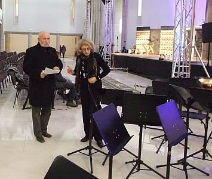 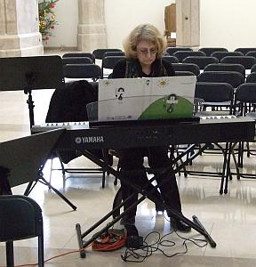
Wszystko gotowe. Chóry pomału zaczynają się zjeżdżać, ale żeby nie marnować czasu zaczynamy próbę z solistką i małą skrzypaczką.
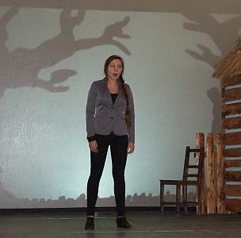 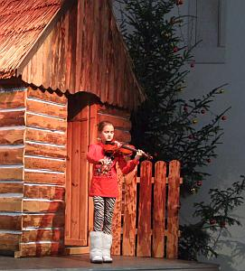 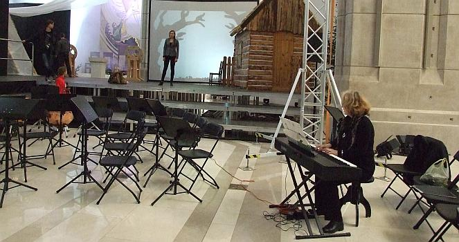
Są już chóry, zaczynamy próbę.
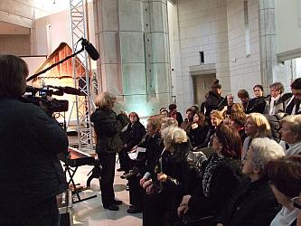 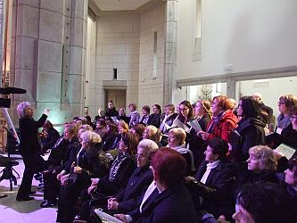 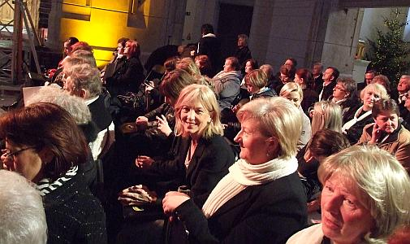 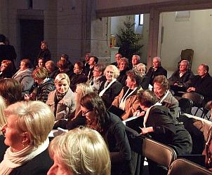 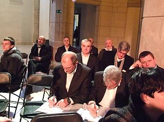
Orkiestra już po swojej próbie rozkłada się do koncertu.
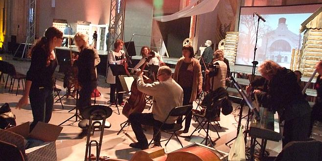
Przed pastorałką odbędzie się koncert kolęd. Ale na razie mamy przerwę, aby odpocząć i napić się czegoś ciepłego, czyli zajęcia w podgrupach :)
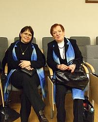 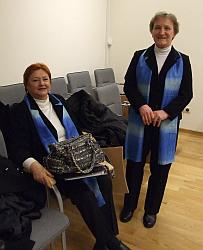 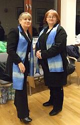 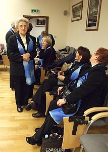 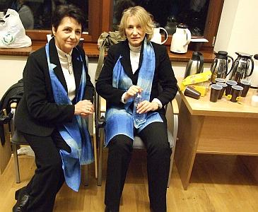
Zaczynamy koncert. Trzema chórami i orkiestrą dyryguje Piotr Piwko – dyrygent chóru Jana Pawła II ze Strumian.
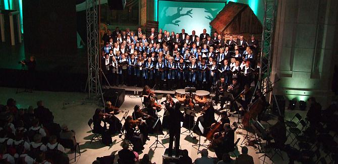 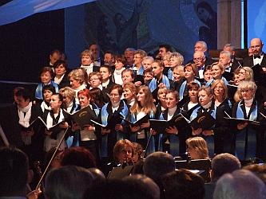 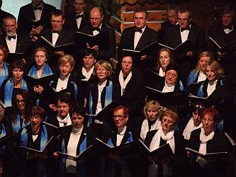
Chóry śpiewają super. Pozostałe dyrygentki śpiewają razem z chórami. A co? Każdy głos „na wagę złota”, zwłaszcza dobry.
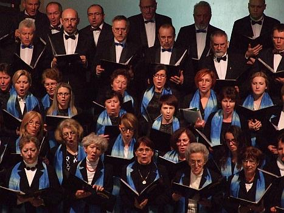 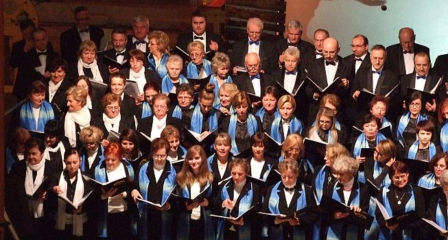
Koncert chórów dobiega końca.
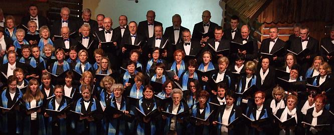
Teraz zaczyna się „Pastorałka wielicka” i tutaj również śpiewają chóry, ale już siedzimy z boku i akompaniuje nam Agnieszka Korczyńska a dyryguje Izabela Szota – dyrygentka chóru Camerata.
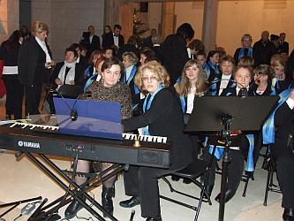 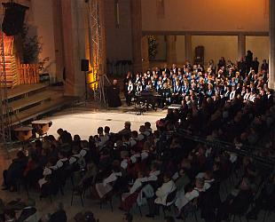
Pastorałka dobiega końca.
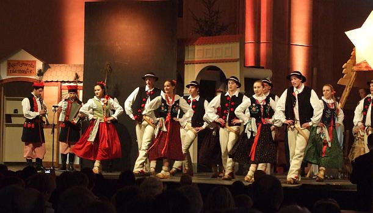
Widzowie nagrodzili wszystkich występujących gromkimi brawami. A widzowie przybyli tłumnie.

© Stowarzyszenie Muzyczne Chór Camerata Wieliczka
Projekt i wykonanie:  Prowadzenie strony: Małgorzata Wysocka-Cebula
Prowadzenie strony: Małgorzata Wysocka-Cebula